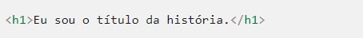
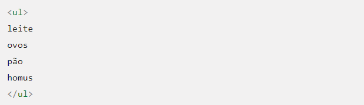
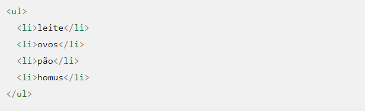
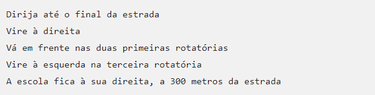
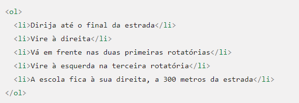

O documento HTML sempre inicia com o que chamamos de estrutura básica. Esta estrutura é quase que imutável. Sempre será dessa
forma e você sempre começará seu HTML começando por esse código.
Geralmente os editores como o Sublime Text já tem atalhos para iniciar os documento HTMLs com essa estrutura, logo, você não precisa se preocupar em decorá-la, mas é bom que faça.
É possível compreender o documento HTML de uma maneira muito simples, através de uma divisão de blocos das tags essenciais, conforme a seguinte estrutura:
Tags são o conjunto de caracteres que formam um elemento, ou seja, quando nos referenciamos à Tag "p" estamos falando disso: <p>
Existem dois tipos de Tags, as que necessitam de fechamento e as que não necessitam de fechamento.
Para as que necessitam de fechamento, utilizamos o sinal de menos (<), seguido do nome do elemento e o sinal de maior (>) para abertura.
Para fechamento, utilizamos o sinal de menor (<), seguido de barra (/), nome do elemento e o sinal de maior (>).
Os elementos que não necessitam de fechamento, também conhecidos como elementos vazios, somente utilizamos o sinal de menor (<),
seguido do nome do elemento e o sinal de maior (>).
Atributos são informações que passamos na Tag para que se comporte da maneira esperada. Existem atributos globais (que funcionam em todas as Tags)
e específicos (que são direcionados para cada Tag, através de especificação).
Os Atributos possuem nome e um valor, existem Atributos que você vai usar praticamente sempre e existem outros que serão mais raros.
Seguem alguns atributos globais importantes e suas descrições simplificadas:
Como você pôde ver, a sintaxe se Atributos é muito simples, porém, por mais seimples que seja é sempre bom ter em mente boas práticas para que
se tenha qualidade e fácil manutenção em seu HTML.
Existem Atributos em que os valores não precisam ser passados entre aspas, mas manter um padrão ajuda você e ajuda quem no futuro tenha que trabalhar
com o seu HTML. Portante, não é uma regra mas uma boa prática você envolver os valores dos Atributos entre aspas.
Um dos principais objetivos do HTML é dar estrutura de texto e significado, também conhecido como semântica, para que um navegador possa exibi-lo corretamente.
O texto mais estruturado é composto por títulos e parágrafos, esteja você lendo uma história, um jornal, um livro da faculdade, uma revista, etc. O conteúdo
estruturado torna a experiência de leitura mais fácil e mais agradável. Em HTML, cada parágrafo deve ser envolvido em um elemento <p>, assim:
Cada título deve ser envolvido em um elemento de título:

Existem deis elementos de título - <h1>, <h2>, <h3>, <h4>, <h5> e <h6>.
Cada elemento representa um nível diferente de conteúdo no documneto;
<h1> representa o título principal, <h2> representa subtítulos, <h3> representa sub-subtítiulos, e assim por diante.
Como exemplo, em uma história, <h1> representaria o título da história, <h2> representaria o título de cada capítulo e <h3> representaria sub-seções de cada
capítulo, e assim por diante.
Depende realmente de você, o quê, exatamente, representam os elementos envolvidos, desde que a hierarquia faça sentido. Você só precisa ter em mente algumas
das melhores práticas ao criar tais estruturas:
As listas estão em toda parte na vida - de sua lista de compras à lista de instruções que você seguiu inconscientemente para chegar à sua casa
todos os dias, para as listas das instruções que está seguindo nesses tutoriais! As listas também estão na Web e temos três tipos diferentes para prestarmos atenção.
As listas não ordenadas são usadas para marcar listas de itens para os quais a ordem dos itens não importa - vamos pegar uma lista de compras como um exemplo.

Toda lista desordenada começa com um <ul> - isso envolve todos os itens da lista:
O último passo é envolver cada item da lista em um elemento <li> (elemento da lista):
As listas ordenadas são listas em que a ordem dos itens é importante - vamos seguir um conjunto de instruções como exemplo:
A estrutura de marcação é a mesma das listas não ordenadas, exceto que você deve conter os itens da lista em um elemento <ol>, em vez de <ul>:

Os hiperlinks são uma das inovações mais interessantes que a Web oferece. Bem, eles são uma característica da Web desde o início, mas são o que torna a Web como ela é - eles nos
permitem vincular nossos documentos a qualuqer outro documento (ou outro recurso) que queremos. Também podemos vincular para partes específicas de documentos e podemos
disponibilizar aplicativos em um endereço web simples (em contraste com aplicativos nativos, que devem ser instalados e tantas outras coisas). Qualquer conteúdo da web pode
ser convertido em um link, para que, quando clicado (ou ativado de outra forma) fará com que o navegador vá para outro endereço (URL).
Um link básico é criado envolvendo o texto ou outro conteúdo que você quer transformar em link dentro de um elemento <a>, e dando-lhe um atribulo href,
(também conhecido como Hypertext Reference, ou target) que conterá o endereço da Web para o qual você deseja que o link aponte.